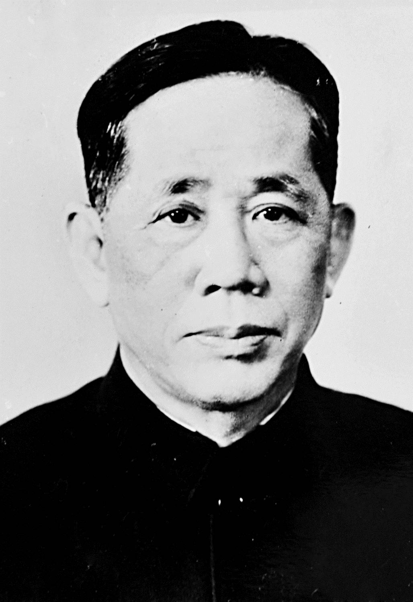
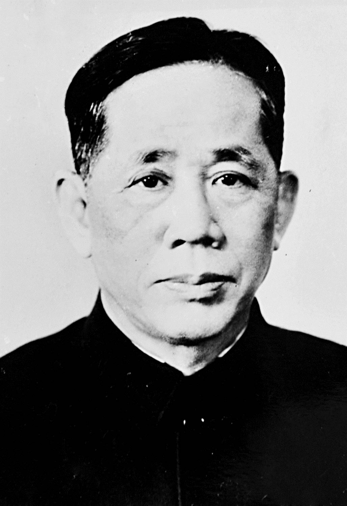
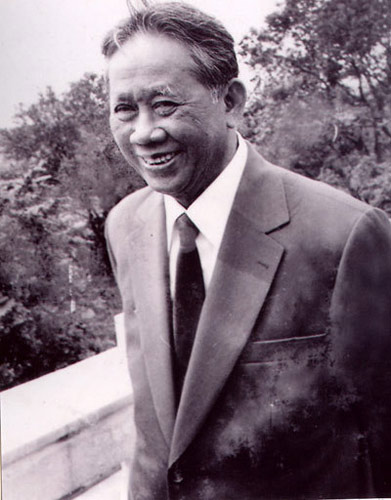
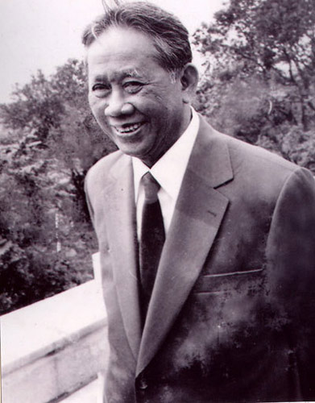

Lê Duẩn
" Chân lý là cụ thể,
cách mạng là sáng tạo
Không sáng tạo thì không có
thắng lợi của cách mạng "
 

Giới thiệu
Lê Duẩn
Sinh ngày 7 tháng 4 năm 1907, mất ngày 10 tháng 7 năm 1986
Quê: Xã Triệu Thuận, Huyện Triệu Phong, Tỉnh Quảng Trị
Tham gia phong trào yêu nước năm 1926
Bí thư Thứ nhất Đảng Lao động Việt Nam (1960-1976)
Ủy viên trung ương đảng viên khóa I, II, III, IV
Tổng Bí thư Ban Chấp hành Trung ương Đảng Cộng sản Việt Nam (1976-1986)
Tổng Bí thư có thời gian tại vị lâu nhất với 25 năm, 303 ngày.
Tác giả của Đề cương cách mạng miền Nam.
Bí thư Xứ ủy Nam Kỳ
Bí thư Xứ ủy Trung Kỳ
Ủy viên Ban tuyên huấn Xứ ủy Bắc Kỳ.
Bí thư Thứ nhất Ban Chấp hành Trung ương Đảng.
Phó Ban chuẩn bị văn kiện Đại hội toàn quốc lần thứ III của Đảng
Phó thủ tướng chính phủ nước VNDCCH
Lãnh đạo Đảng bộ miền Nam tổ chức cuộc kháng chiến ở Nam Bộ
Huân chương sao vàng
Huân chương Lenin
Đọc thêm 

Hoạt động cách mạng của Lê Duẩn
Nhà lưu niệm Phó thủ tướng Lê Duẩn
Nhà lưu niệm cố Tổng Bí thư Lê Duẩn nằm trên khuôn viên có diện tích 400m2. Nguyên trước đây là nhà và vườn của cụ thân sinh Lê Hiệp. Nhà làm bằng gỗ, khá khang trang. Trải qua hai cuộc chiến tranh tàn khốc, ngôi nhà bị đốt cháy nhiều lần. Sau khi đất nước hoà bình thống nhất (1976), huyện Triệu Hải (cũ) cùng bà con quê hương đã xây dựng nên một ngôi nhà để vừa làm nhà lưu niệm, thờ cúng gia tộc vừa làm nơi nghỉ ngơi cho đồng chí Lê Duẩn mỗi lần về thăm quê. Ngôi nhà được khởi công xây dựng vào tháng 2/1976 và hoàn thành vào cuối năm đó. Nhà dài 9m, rộng 4,5m, kết cấu theo dạng nhà băng 3 gian, 2 chái. Bao quanh nhà là 4 hàng rào chè tàu được cắt tỉa cẩn thận, phía sau khuôn viên trồng các loại cây cảnh và cây ăn trái.
Triệu Thuận, Triệu Phong, Quảng Trị